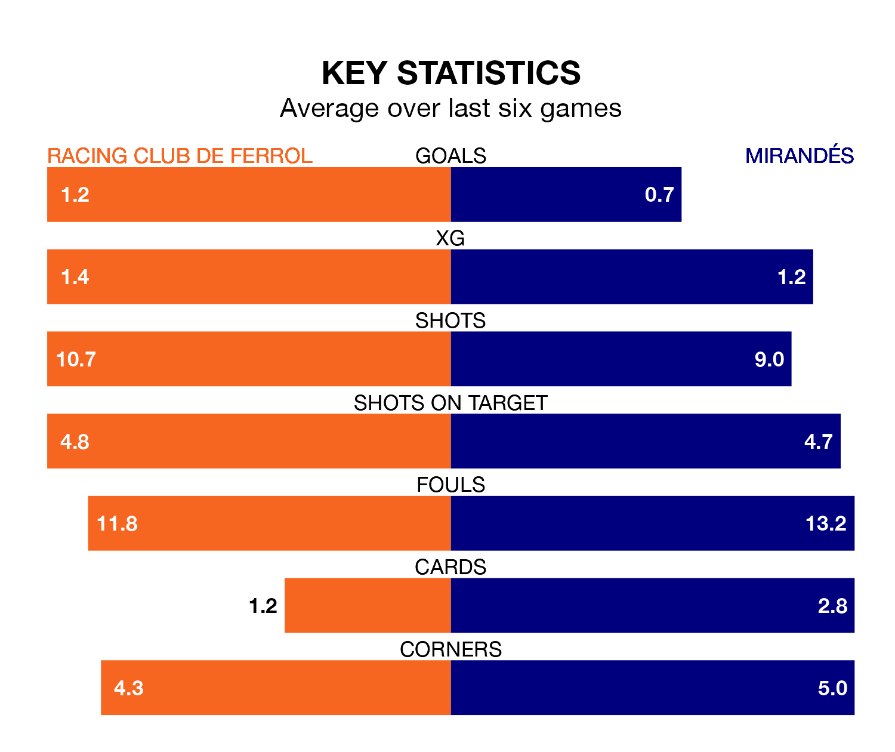

Mirandés travel to Racing Club de Ferrol on late Monday in the Segunda División.
The visitors come into the game on the back of a win in their last match, having beaten Burgos CF 2-1 at home, with goals from Antonino La Gumina and Carlos Martín.
Racing, meanwhile, lost their last match, 1-0 against Villarreal B.
With 43 goals in 36 games so far this season, Racing are scoring more than average in the league with 1.2 goals per game. But they are conceding more than average too, letting in 42 goals at a rate of 1.2 per game.
Mirandés, meanwhile, are average scorers, with 1.1 goals per game. They have conceded 1.4 goals per game.
In Martín Domínguez, the away side have one of the league's most on-form strikers so far this season. He has notched 14 goals in 34 appearances, to sit fourth in the scoring charts.
His goal rate of one every 171 minutes is quicker than that of Iker Losada Aragunde, Ferrol's top scorer with a goal every 326 minutes, and a total of nine goals in 36 games.
The hosts are in mixed form in the Segunda División, with three wins and a draw from their last six games.
With a win and two draws over that period, Mirandés's form is worse – they have taken five points from 18, compared to Racing's 10.
Mirandés are 17th in the table after 36 games, of which they have won 10 and drawn 11, earning 41 points.
Racing are eight places ahead of the visitors in ninth, with 14 wins and 12 draws putting them on 54 points.
Updated: 07:59 (UTC), 26/04/24